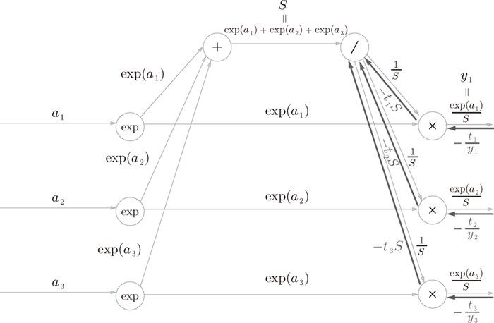
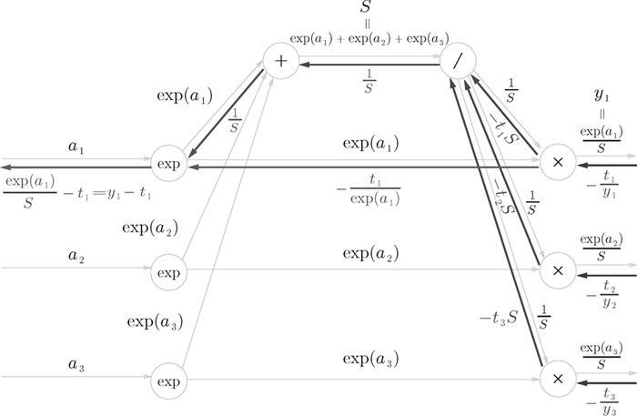

是教师标签，也是 one-hot 向量。one-hot 向量意味着 中只有一个元素是 1，其余都是 0。因此， 的和为 1。
是教师标签，也是 one-hot 向量。one-hot 向量意味着 中只有一个元素是 1，其余都是 0。因此， 的和为 1。首先是 Cross Entropy Error 层的反向传播。Cross Entropy Error 层的反向传播可以画成图 A-4 那样。
图 A-4 交叉熵误差的反向传播
求这个计算图的反向传播时，要注意下面几点。
- 反向传播的初始值（图 A-4 中最右边的值）是 1（因为 ）。
- “×”节点的反向传播将正向传播时的输入值翻转，乘以上游传过来的导数后，再传给下游。
- “+”节点将上游传来的导数原封不动地传给下游。
- “log”节点的反向传播遵从下式。
遵从以上几点，就可以轻松求得 Cross Entropy Error 的反向传播。结果 是传给 Softmax 层的反向传播的输入。
下面是 Softmax 层的反向传播的步骤。因为 Softmax 层有些复杂，所以我们来逐一进行确认。
步骤 1
前面的层（Cross Entropy Error 层）的反向传播的值传过来。
步骤 2

“×”节点将正向传播的值翻转后相乘。这个过程中会进行下面的计算。
步骤 3
正向传播时若有分支流出，则反向传播时它们的反向传播的值会相加。因此，这里分成了三支的反向传播的值 会被求和。然后，还要对这个相加后的值进行“/”节点的反向传播，结果为 。这里， 是教师标签，也是 one-hot 向量。one-hot 向量意味着 中只有一个元素是 1，其余都是 0。因此， 的和为 1。
步骤 4
“+”节点原封不动地传递上游的值。
步骤 5
“×”节点将值翻转后相乘。这里，式子变形时使用了 。
步骤 6

“exp”节点中有下面的关系式成立。
根据这个式子，向两个分支的输入和乘以 后的值就是我们要求的反向传播。用式子写出来的话，就是 ，整理之后为 。综上，我们推导出，正向传播时输入是 的节点，它的反向传播是 。剩下的 、 也可以按照相同的步骤求出来（结果分别为 和 ）。此外，除了这里介绍的 3 类别分类外，对于 n 类别分类的情况，也可以推导出同样的结果。